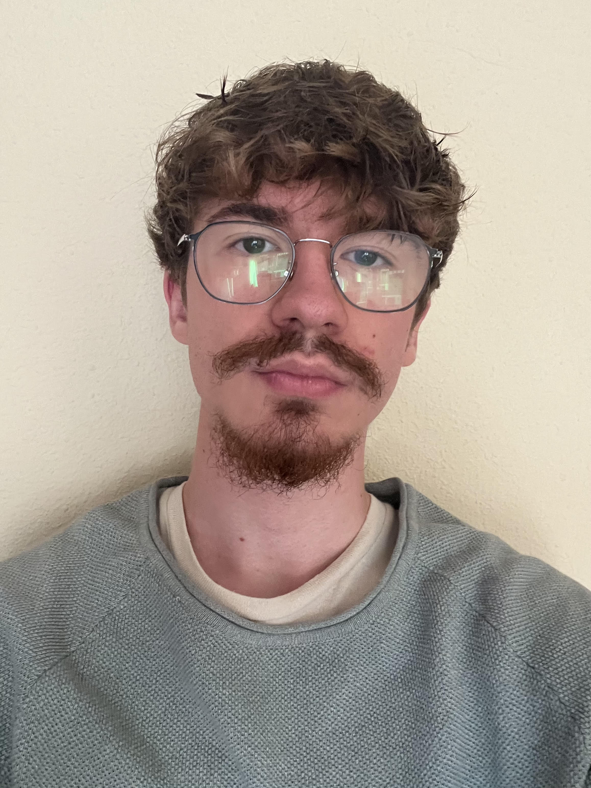

Mi nombre es Javier Argenta Cañas. Actualmente estoy estudiando el grado de Ingeniería Informática en la UFV. A lo largo de mi vida siempre me ha interesado la ciencia y la innovación tecnológica, a la par que los ordenadores y videojuegos.
Debido a estos intereses crecientes, decidí estudiar durante dos años el grado de Ingeniería en Tecnologías y Sistemas de Telecomunicaciones, en la UPM. Al estudiarlo, me di cuenta de que mi verdadera pasión es la informática, es por ello que decidí cambiarme a mi actual grado.
Gracias a mis años en "teleco" tengo una base matemática y física algo mayor que muchos de los estudiantes de nuevo ingreso, y debido a mi creciente interés por la programación, tengo en la página web "HackerRank" varios emblemas en diversas competencias y lenguajes de programación.

Entre mis aptitudes más visibles diría que se encuentran el liderazgo y la constancia, el escuchar a los demás y saber trabajar en equipo. Creo que siempre he tenido una cualidad en el trato con los demás y en saber sacar el mejor provecho de los concocimientos de mis compañeros.
He de destacar también que en el entorno de la programación tengo una gran curiosidad y soy gran partidario del trabajo autónomo, de hecho, como antes he mencionado, poseo emblemas en una web de programación llamada "HackerRank" la cual consiste en retos de programación donde aprendes de manera
única e independiente a realizar dichos ejercicios.